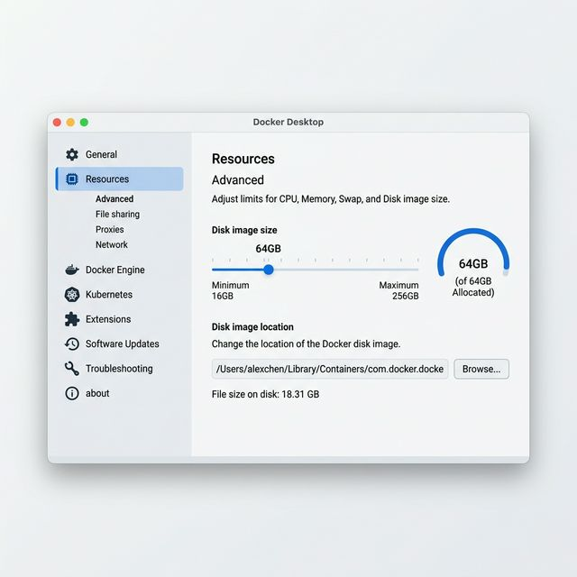

Розробники часто стикаються з тим, що Docker займає 60, 80 або навіть 128 ГБ на диску, хоча в ньому запущено лише один маленький контейнер. Це стається через те, що Docker створює віртуальний диск, який поступово роздувається, але не стискається автоматично.
Спосіб 1: Швидке очищення через Terminal
Якщо вам потрібно швидко видалити всі невикористовувані контейнери, мережі, образи-сироти і томи, відкрийте Terminal і виконайте:
docker system prune -a --volumes
Обережно: ця команда видалить усі образи, які зараз не використовуються жодним активним контейнером.
Спосіб 2: Зменшити ліміт диска в Docker Desktop
Це найважливіший крок. Навіть якщо Docker майже порожній, файл Docker.raw може залишатися великим, якщо в налаштуваннях дозволено занадто багато місця.
- Відкрийте Docker Desktop.
- Натисніть Settings.
- Перейдіть у Resources → Advanced.
- Знайдіть параметр Disk image size.
- Встановіть адекватний ліміт, наприклад 32 або 64 ГБ.
- Натисніть Apply & Restart.

Спосіб 3: Очистити дані через інтерфейс Docker Desktop
Якщо не хочеться використовувати Terminal, частину зайвих даних можна прибрати через інтерфейс.
- Відкрийте Docker Desktop.
- Перейдіть у розділ Troubleshoot.
- Знайдіть опцію Clean / Purge data.
- Виберіть, що саме потрібно очистити, і підтвердьте видалення.
Де лежить файл Docker.raw
Якщо хочете перевірити файл вручну через Finder, зазвичай він знаходиться тут:
~/Library/Containers/com.docker.docker/Data/vms/0/data/Docker.raw
Щоб швидко перейти до цієї папки, у Finder натисніть Cmd + Shift + G і вставте шлях.
Що варто зробити в першу чергу
Найкраща послідовність така: спочатку очистіть непотрібні контейнери й образи, потім зменште Disk image size, а вже після цього перевірте, скільки місця реально повернулося.
Так Docker не буде непомітно забирати десятки гігабайтів, а ваш Mac залишиться швидким і передбачуваним у роботі.